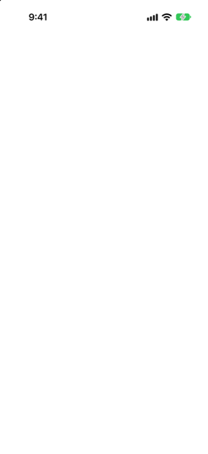

الدليل › الحسابات والبطاقات والأشخاص
بطاقات الائتمان
كشوف الحساب، تواريخ الاستحقاق، ما تدين به الآن وما ستكونه الفاتورة التالية.
يسجّل Damla عملية شراء بالبطاقة في اليوم الذي تحدث فيه، والنقد يغادر بنكك في اليوم الذي تدفع فيه الفاتورة. فترى أين تذهب الأموال ومتى تذهب.

متى تستخدمها
- لإضافة بطاقة وتحديد دورة فوترتها.
- لرؤية ما تدين به الآن، وما ستكونه الفاتورة التالية ومتى تستحق.
- لإخبار Damla بما يقوله آخر كشف حساب لديك إنه ما يزال غير مدفوع.
- لتقسيم عملية شراء كبيرة على أقساط.
خطوة بخطوة
- أضف البطاقة: في الحسابات انقر زر زائد واختر إضافة حساب، ثم اختر نوع البطاقة وأدخل ما تدين به اليوم.
- افتح البطاقة من الحسابات، وانقر عليها لقلبها، ثم انقر التفاصيل.
- تحت دورة الفوترة، اختر مدفوع من — حساب البنك أو المدخرات أو المحفظة الذي يدفع الفاتورة. وبدون حساب دفع لا يمكن للتوقعات أن ترى فاتورة البطاقة.
- حدد تاريخ كشف الحساب وتاريخ استحقاق الدفع باستخدام أزرار الخطو، كل واحد منهما كيوم من الشهر. يعرض التذييل تاريخي الكشف والدفع التاليين لتتحقق منهما في تطبيق بنكك.
- عندما يصبح لدى Damla آخر كشف حساب لعرضه، تُضيف التفاصيل قسمًا آخر كشف حساب. أدخل المبلغ الذي يقوله بنكك إنه ما يزال غير مدفوع في ما يتبقى دفعه وانقر تحديث آخر كشف حساب. يدفع Damla ذلك حينئذ في تاريخ استحقاقه، ويأتي بقية ما تدين به مع الكشف التالي. أدخل 0 بمجرد دفعه.
- اختياريًا، املأ إنفاق الشهر المعتاد: ما تنفقه البطاقة عادةً في الكشف. تستخدمه التوقعات للكشوفات التي لم تُصدر بعد.
من الجيد أن تعرف
- تفتح البطاقة في الحسابات بعبارة أنت مدين. عندما يستطيع Damla رؤية فاتورة قادمة، تُظهر البطاقة الفاتورة التالية وتاريخها؛ وحتى ذلك الحين تُظهر ما أنفقته في آخر 30 يومًا. يعرض ظهر البطاقة تاريخ الكشف وتاريخ الاستحقاق مع التاريخ التالي لكل منهما، والفاتورة التالية بمبلغها، والحساب الذي تُدفع منه، وما أُنفِق في آخر 30 يومًا.
- رقم ما يتبقى دفعه مهم. بدونه، يُحتسب كل ما تدين به كالكشف التالي، على بعد شهر. ومعه، لا يتغير مجموع ما تدين به — يتغير فقط متى سيغادر.
- إنفاق الشهر المعتاد رقم ابتدائي فقط. الكشف الذي صدر يحفظ مبلغه الحقيقي دائمًا، وبمجرد أن تمتلك البطاقة عددًا من الأشهر الكاملة في Damla يوازي متوسط إعداد إنفاق البطاقة المتوقع، يستبدل متوسط تلك الأشهر به. اتركه فارغًا لاستخدام تاريخ البطاقة نفسه من البداية. يحتاج ذلك التاريخ شهرين كاملين؛ حتى ذلك الحين يُستخدم مبلغ آخر كشف حساب.
- يمكنك أيضًا إدخال مبلغ ما يتبقى دفعه عند إضافة البطاقة.
- بمجرد أن يعرف Damla الأرقام الأخيرة للبطاقة، تضيف تنبيهات البنك مشترياتها من تلقاء نفسها. وينتظر التنبيه الذي لا تطابقه أرقامه مع حساب بعد في صندوق الوارد؛ أكمله مرة واحدة ليتعلم Damla الأرقام.
- لتقسيم عملية شراء على أشهر، مرّر عليها في النشاط وانقر تحويل إلى أقساط، أو قل ذلك في جملة. اكتب الأرقام من عرض بنكك — القسط، والأشهر، وأي رسوم — وانقر تحويل. وإن كانت الجملة، يُظهر Damla الخطة التي قرأها قبل إنشاءها. لا يتغير شيء حتى تنقر الزر. لا يحسب Damla الفوائد.
ذات الصلة
هل هناك شيء غير واضح أو ناقص؟ اكتب إلى support@raveniq.ai واذكر الصفحة.